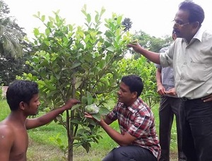

পরিবেশ বান্ধব বিষমুক্ত নিরাপদ ফসল উৎপাদনে সফলতা
পাশাপাশি তিনি ২০১৪ সালে থাই পেয়ারা চাষে উদ্বুদ্ধ হন। তিনি ৫০ শতক জমিতে থাই পেয়ারার চাষ শুরু করেন। প্রথম বছরে তিনি ৫০ শতক জমি থেকে ২০,০০০/- টাকার পেয়ারা বিক্রি করেন এবং ৫০,০০০/- টাকার কলম বিক্রয় করেন। এ বছর আরোও ৬০ শতক জমিতে থাই পেয়ারা রোপন কাজ শেষ করেন। এছাড়াও তিনি ৩৩ শতক জমিতে মেটে আলুর চাষ করেন। সেখান থেকে তিনি বীজ আলু হিসাবে ১,৫০,০০০/- টাকা আয় করেন। বর্তমানে তার কৃষি খামারের নাম গ্রীন মিন্ট এগ্রো ফার্ম হিসাবে পরিচিত। কৃষি কাজের পাশাপাশি তিনি ছ্্োট্ট একটি ব্যবস্যা বেচে নেন । এ ব্যবস্যা টি তিনি কৃষকের উপকারের জন্য করেন। তার দোকান টি হলো বালাইনাশকের দোকান। এ দোকানের নাম দেন মেসার্স অগ্রনী কৃষি বিপনী। এখান থেকে তিনি প্রতি মাসে বেশ টাকা আয় করেন।
উল্লেখ্য তিনি ২০১৫ সালে মেসার্স মুক্ত বিল্ডার্স নামে একটা সরকারী ঠিকারদার প্রতিষ্ঠানের নামে নিবন্ধন করেন। তিনি নিজের পায়ে দাড়াবার জন্য মাঝে মাঝে শুধুর রাজশাহী বিশ্ববিদ্যলয়ে ছুটে যেতেনে। তার শিক্ষাগুরু ছিলেন ডঃ মঞ্জুরুল ইসলাম, উদ্ভিদ বিজ্ঞান বিভাগ, গবেষক টিস্যুকালচার রাজশাহী বিশ্ববিদ্যলয়। তিনি এক জন নামাযী লোক তিনি আল্লার পবিত্র দরবারে সকল সময় প্রার্থনা করতেন স্বাবলম্বী হওয়ার জন্য আল্লহ তার দোয় কবুল করেছেন। তিনি এখন এক জন্য সুখী মানুষ।
মোঃ ফারুক হোসেন শিমুল আজ তিনি এক জন স্বাবলম্বী কৃষক। নিজের পায়ে দাড়ানো যে কতটা আনন্দ দায়ক যে সফল হয়নি সে কোন দিন অনুভব করতে পারবে না। তিনি তার জীবনকে মানুষের উপকারে নিয়োজিত রেখে স্বার্থক করে তুলতে চান। তাইতো সমাজকে ভালোবেসে, দেশকে ভালোবেসে এবং সমাজের উন্নয়নে সদা অবদান রেখে চলেছেন মণিরামপুরের সেই কৃতি সন্তান মোঃ ফারুক হোসেন শিমুল
.jpg)
.jpg)
.jpg)
.jpg)


.jpg)